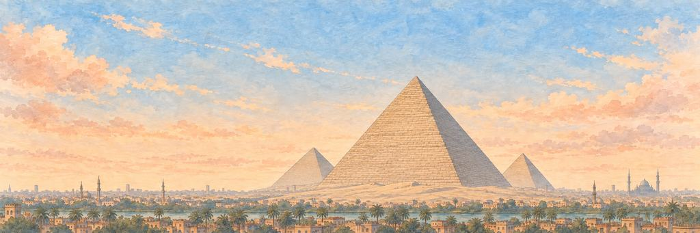

开罗 纸飞机游戏
飞过金字塔，它们比我知道的任何故事都要古老。
给开阔的沙漠省着点油。闯过骆驼，再闯过狮身人面像。
胜利之城
公元 969 年，法蒂玛王朝建立了开罗，给它取名「卡希拉」，意思是「胜利者」。它在尼罗河边几座更古老的城镇旁边长大，就在河谷展开、变成宽阔三角洲的地方，后来成了非洲最大的城市之一。
“我想沿着尼罗河，一直飞到三角洲开始的地方。”
地标吉萨大金字塔
大约 4500 年前，人们为胡夫国王建造了大金字塔，据估计用了约 230 万块石头。它高约 146 米，在大约 3800 年里一直是人类建过的最高建筑。在古代世界七大奇迹中，只有它还屹立到今天。
谁在守护开罗的心愿。
精英守护者先醒来，首领守护者守着心愿本身。打中它们的弱点，就是一声「砰！」；最后一击，就是「KO！」。然后它们都会笑着鞠个躬。
-
精英


骆驼
嚼得慢，想得也慢 · 沙漠之路的守护者
今天在吉萨驮着游客转来转去的骆驼，在那里其实是后来的。大约 4500 年前建金字塔的时候，是驴子帮工匠驮东西，石头靠船来运。大多数历史学家认为，骆驼要再过大约两千年，才随着亚述、波斯和希腊的统治者在埃及多了起来。
骆驼停下嘴里的咀嚼，抬起头来。骆驼低声叫了一下，挪了挪脚，继续嚼着。骆驼收起腿，慢慢地坐了下来。
“我要骑着骆驼，一直走到金字塔跟前。”
-
首领

狮身人面像
打了 4500 年的瞌睡 · 吉萨的守护者
大约 4500 年前，人们在吉萨的一整条岩脊上凿出了狮身人面像，它很可能是为法老哈夫拉凿的。好几百年里，它都被沙子埋到了肩膀。它两只前爪之间有一块石碑，上面说年轻的图特摩斯王子梦见它许诺：只要把它从沙里挖出来，就让他当国王。他真的挖了，后来也真的当上了国王。
狮身人面像抖掉了翅膀里的沙子。狮身人面像抖了抖一只翅膀，眯起了眼睛。狮身人面像收起翅膀，鞠了一躬，安静地落坐在沙子里。
“我也要出一个谜语给他猜。”
守护着一件古物：金甲虫护身符。你的引擎烧得更久。